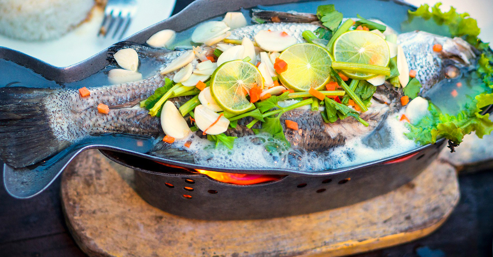
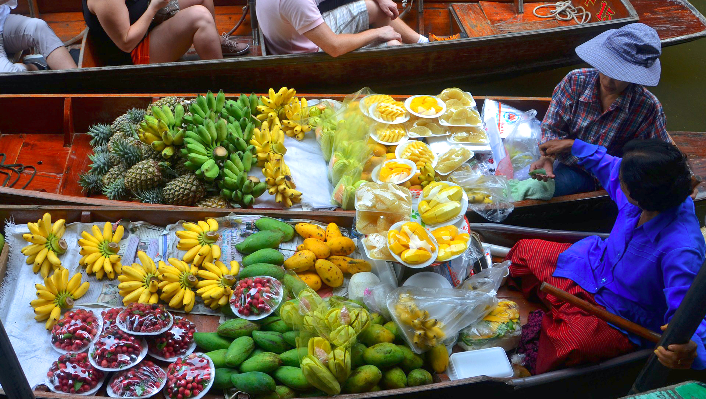
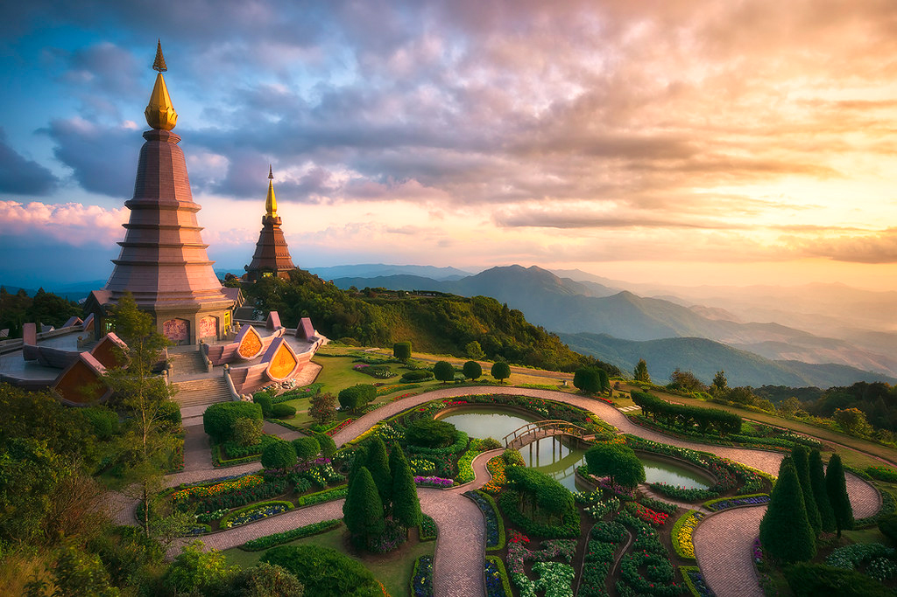
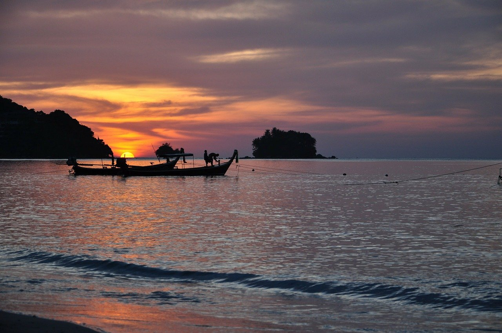
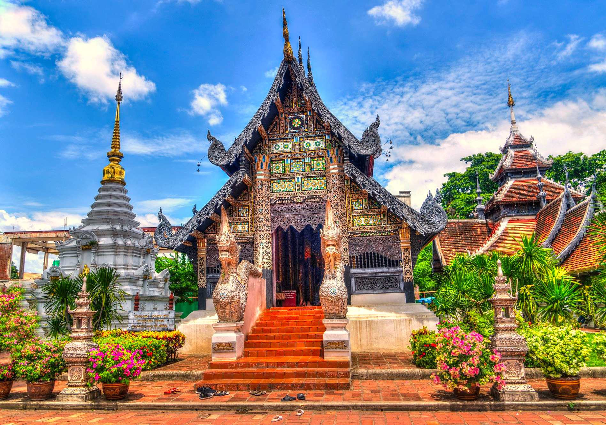
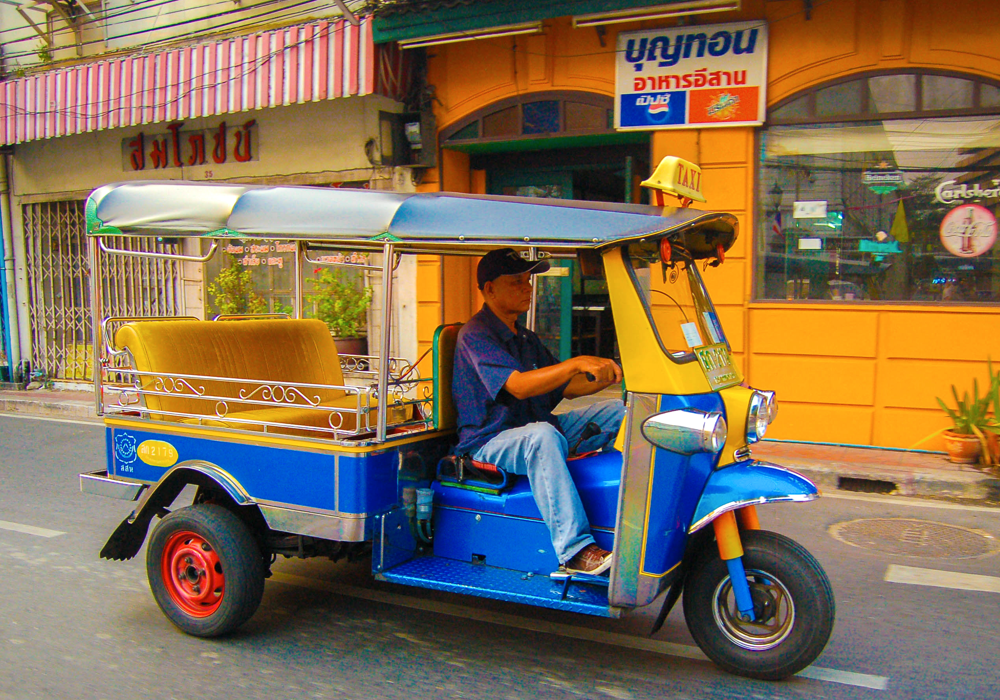
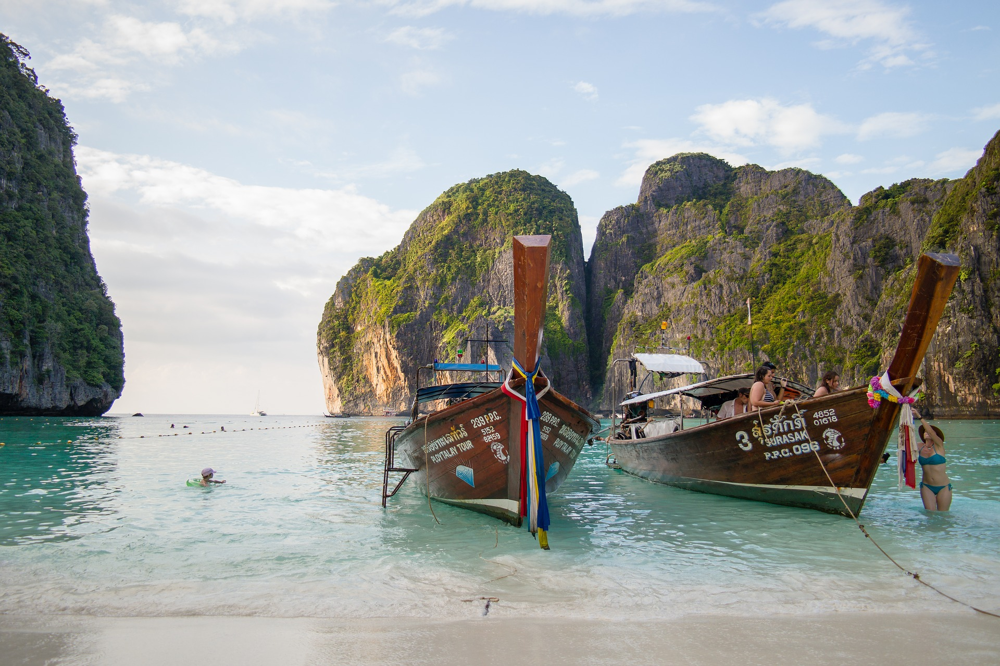

I have been dreaming of visiting Thailand FOR EVER! And, I have finally made plans to go Summer 2024, with my siblings. Even though its 2 years away I have already started planning our travel itinerary. Below are some of the places and food we HAVE to visit/try while there.

I love elephants! They are my spirit animal, and in Thailand they have an Elephant Conservatory.

Thai food is my favorite cuisine, I can't wait to try all of the authentic dishes. Including fresh fish.

Tropical fruits, like mangoes & banana are my go-to breakfast food.

Doi Inthanon National Park is a beautiful park in Chiang Mai.

I heard Thailand has beautiful beaches, perfect for watching the sunset.

A beautiful temple in Thailand.

Another beautiful temple in Thailand, Doi Suthep is one of the most famous ones in Thailand.

Tuk Tuks are popular and convient forms of transportation.

The beaches in Tailand and views are mesmerizing.
If you've been to Thailand and have any suggestions for me please let me know! Hotels to stay at, food to try, places to visit, anything!